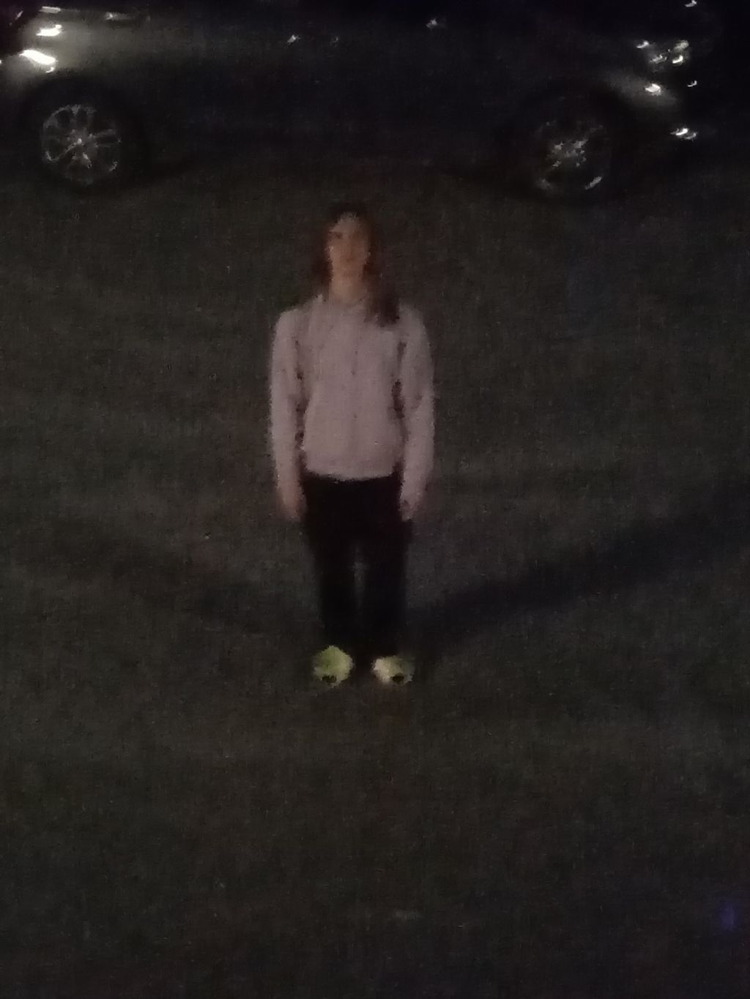

Uula Salmijärvi
Ohjelmistokehittäjä ja kokenut unix-järjestelmänvalvoja

Yhteystiedot
kotiosoite: aaaaaaaaaaaaaaaa
puhelinnumero: +123 12 1234567
sähköposti: uula@example.com
Kuka olen?
Tykkään ohjelmoida erilaisia ohjelmia, minua kiinnostaa erityisesti alhaisen tason ohjelmointikielet kuten C.
Myös peliohjelmointi kiinnostaa, sillä pelaan paljon videopelejä vapaa-ajallani.
Kokemus
Olen ohjelmoinut 2 peliä Godot -pelimoottorilla, jonka ohjelmointikieli on lähellä pythonia.
Olen myös opetellut C -ohjelmoinikieltä, jolla olen tehnyt pari projektia. C -ohjelmoinikielen osaaminen on minulla vielä aika vähäistä.
Myös nettisivujen backend kehitykseen olen hiukkasen perehtynyt käyttäen ohjelmistoa kuten node.js ja Go
Linux-pohjaisia käyttöjärjestelmiä olen käyttänyt runsaasti, joten niistä minulla on paljon kokemusta. Käytän omilla koneillani minimalistista Void Linux -distribuutiota ja itse hostaamalla palvelimellani käytän klassista Debian -distribuutiota.
Koulutus
Opiskelen tällä hetkellä Turun Ammatti-Instituutin Tieto- ja viestintätekniikka alan ohjelmistokehityslinjalla.
Tämän jälkeisestä opiskelusta en ole varma, mutta olen harkinnut meneväni ammattikorkeakouluun.
Kielitaito
Puhun suomea äidinkielenäni, englantia osaan erinomaisesti ja ruotsia osaan vähäsen.
Käyttämäni ohjelmisto
Ohjelmia ja ohjelmointikieliä joita käytän / osaan käyttää jollain tasolla:
- linux / muut unixin kaltaiset järjestelmät
- vim / neovim (koodieditorini)
- git (ja github)
- python (en tykkää mutta osaan käyttää hyvin)
- C (tykkään mutta en osaa käyttää hyvin)
- godot (pelimoottori)
- kdenlive (videoeditori)
- krita (kuvaeditori)
- lmms (huono musiikintekoohjelma)